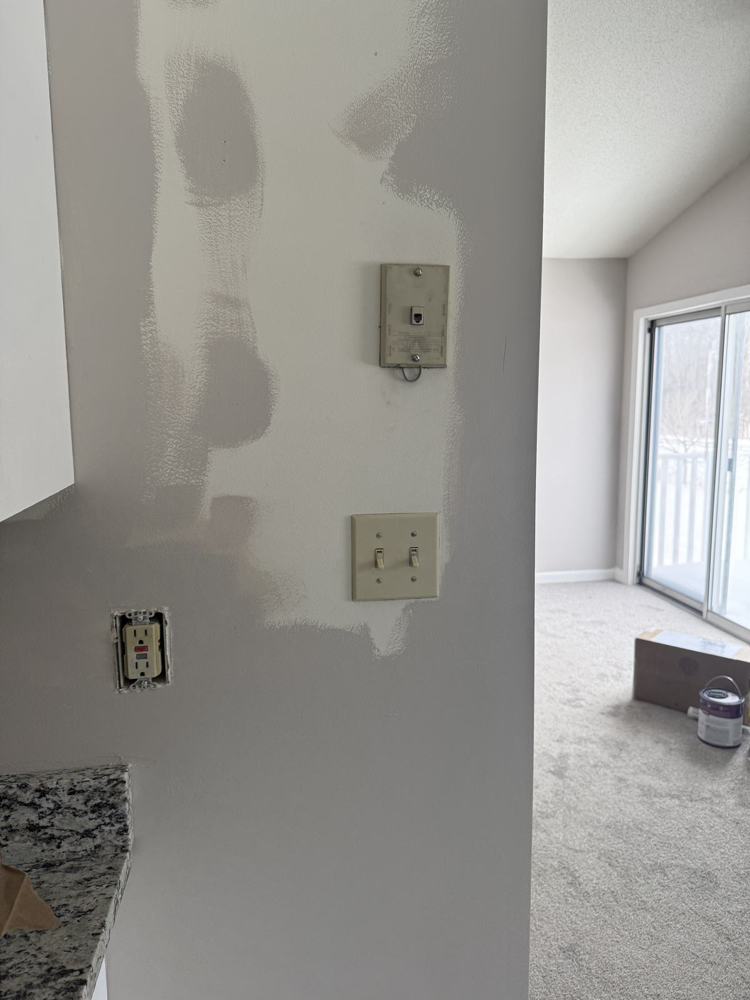
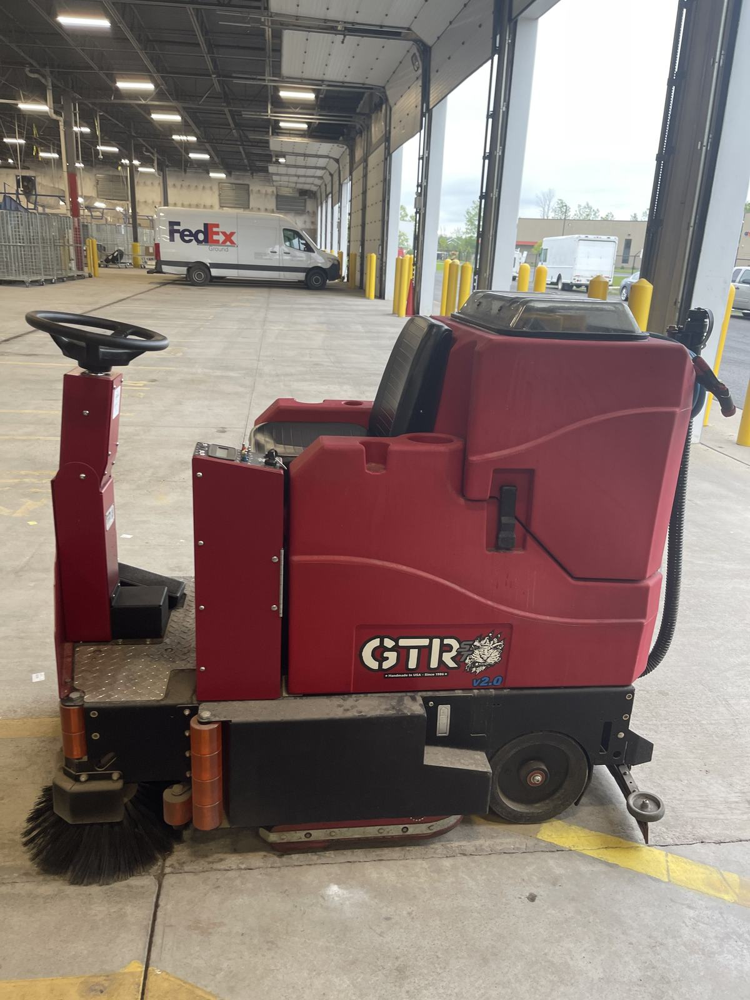

Schenectady, NY · The Electric City
Commercial Cleaning & Property Services in Schenectady, NY
Janitorial for downtown offices and the Proctors district, make-ready for Schenectady rentals, student turnovers near Union College and post-construction cleans for the city's new development — one crew, one contract.

What Schenectady properties need most
From State Street storefronts to industrial buildings and college rentals, these are the services we run most across Schenectady County.
Office & commercial janitorial
Recurring cleaning for downtown offices, restaurants, retail and professional suites — nightly, weekly or custom, with discreet crews in buildings that serve the public every day.
Make-ready & rental turnovers
Schenectady has a large rental stock of two-family houses and older apartment buildings. We turn units between tenants: deep clean, repairs, paint and patch, and floors.
Student turnovers near Union
Off-campus houses and apartments near Union College, turned on the trimester calendar with the same full scope we use on our largest student-housing jobs.
Industrial, warehouse & floors
Offices, break rooms, restrooms and large floors in light industrial and warehouse buildings — machine scrubbing, strip and wax, and sealed-concrete care around shifts.
Book a service in Schenectady
From Proctors to the Stockade to Mohawk Harbor
Schenectady earned the name the Electric City from its long history with General Electric, and that industrial heritage still shapes its commercial landscape. Today the city pairs that history with a reinvested downtown, a riverfront rebuilt at Mohawk Harbor, and a college neighborhood around Union College — one of the oldest colleges in the country.
That mix means Schenectady buildings range from historic Stockade homes to modern waterfront apartments to large industrial floor plates. We match the crew and the equipment to the building.
Downtown & the Proctors district
State Street anchors the city's theater, restaurant and office activity around Proctors. We provide recurring janitorial for offices and commercial spaces, scheduled around show nights and busy weekends.
Mohawk Harbor & the riverfront
New apartments, offices and hospitality on the former industrial waterfront. Common-area cleaning, make-ready for apartment turns, and post-construction cleans as new phases open.
Union College & the Stockade
Off-campus student houses near Union Street and Nott Terrace, and historic homes in the Stockade district. Careful turnovers, paint and patch, and hardwood floor care.
Upper Union Street & Ellis Hospital area
Neighborhood retail, professional offices and medical suites along Upper Union Street and near Ellis Hospital on Nott Street. Consistent, documented cleaning.
SUNY Schenectady & the Western Gateway
The community college sits downtown near the Western Gateway. We serve the offices, retail and rental properties around it.
Rotterdam, Niskayuna & Glenville
Office parks, retail plazas, apartment complexes and light industrial space just outside the city — same crews, same contract.



Student housing · Union College
Union College turnovers on a trimester calendar
Union runs on trimesters, so off-campus move-out lands later than at most Capital Region schools — and the window before fall move-in is shorter. That makes a crew that can clean, repair, paint and patch in one pass matter even more.
Read how we plan around Union's calendar on our Union College student turnover page, or the full scope on student turnover cleaning.
Schenectady buildings we keep running
We work for property managers with rental portfolios across Schenectady's neighborhoods, office and retail owners downtown, facility managers at light industrial and warehouse sites, and general contractors finishing new builds and renovations. Our client list includes national facility names like AECOM, Cushman & Wakefield, FedEx, UPS and CSX, alongside local property managers.
Whatever the building, the model is the same: one written scope, one crew that knows your property, one invoice, and a phone that is answered 24/7. When a tenant moves out early or a water leak hits on a Sunday, you call the same people who clean the building.
- Property managers with Schenectady rental portfolios
- Downtown offices, restaurants and retail
- Landlords near Union College
- Light industrial and warehouse facilities
- Medical and professional suites
- General contractors closing out projects
How a Schenectady job runs
Free walkthrough
We walk the building — floors, restrooms, units, loading areas — and note access, shifts and deadlines.
Written scope in 24 hours
You get a line-by-line scope and price, plus W-9 and certificate of insurance before day one.
One crew delivers
Our crew does the work, checks it against the scope and stays on call 24/7 for the property.
What the work looks like



Also serving near Schenectady
Same crews, same contract, across the Capital Region.
Questions about service in Schenectady
Do you provide commercial cleaning in downtown Schenectady?
Yes. We clean offices, restaurants, retail and mixed-use buildings along State Street, around Proctors and in the Mohawk Harbor area, on nightly or weekly schedules. Most work is done after hours so your staff and customers never see the crew.
Do you turn student housing near Union College?
Yes. We turn off-campus houses and apartments near Union College for landlords and property managers. Union runs on trimesters, so the main move-out comes later than at most area schools. Our Union College page explains how we plan around it.
Can you clean light industrial and warehouse space in Schenectady County?
Yes. We clean offices, break rooms, restrooms and floors in light industrial and warehouse buildings, including machine scrubbing and sealed-concrete care. We work around shifts and production schedules.
Do you handle post-construction cleaning for Schenectady projects?
Yes. We work with general contractors and developers on new builds and renovations across Schenectady, doing the rough, final and touch-up cleans so the space is ready for inspection and handoff.
How fast can I get a price?
Usually within 24 hours of the walkthrough. Call (518) 948-7156 or send the form below, and we will schedule a free walkthrough and send a written scope, plus a W-9 and certificate of insurance before work starts.
Get a quote for your Schenectady property
Tell us the address and what you need. We will walk it and send a written scope and price, usually within 24 hours.
- Bonded & insured — W-9 and COI before day one
- Our own crews, not a revolving door of subcontractors
- Procurement team? Get our vendor packet